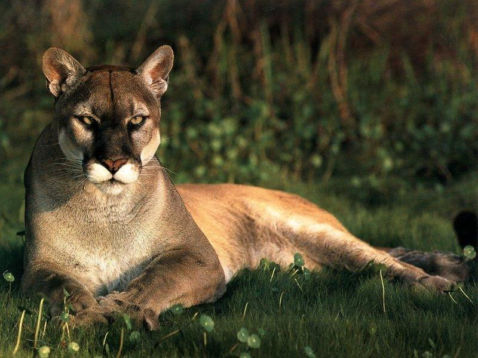
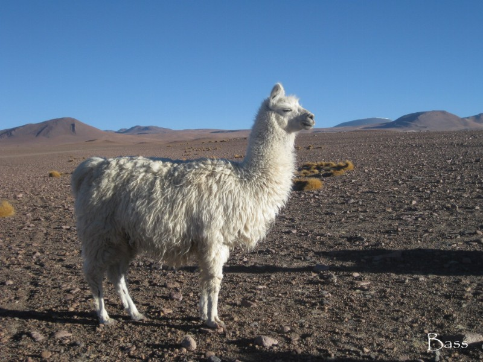
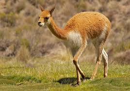
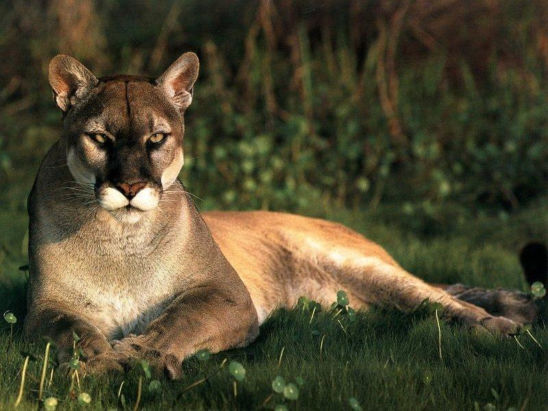
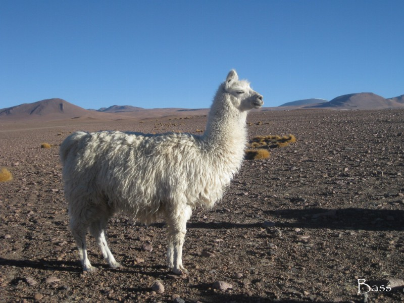
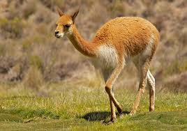
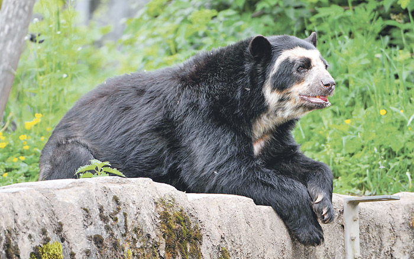

El oso de anteojos tiene fama de ser adaptable, ya que se encuentra en una gran variedad de hábitats y altitudes en toda su área de distribución, incluidos bosques nubosos, pastizales de altura, bosques secos y matorrales desérticos, a altitudes de 250 a 4,750 metros.
Se sabe muy poco sobre el oso de anteojos a pesar de que es uno de los mamíferos más grandes de Sudamérica. Se cree que es diurno y se ha observado que hace nidos en los árboles mientras se alimenta o descansa. Al igual que otros osos, es un omnívoro, aunque la vegetación parece constituir la mayor parte de la dieta, especialmente el fruto de las plantas de la familia Bromeliad. Otros artículos tomados incluyen cactus, corazones de bambú, pecíolos de palma, maíz, roedores, pájaros, insectos y algunas veces ganado y carroña. El oso de anteojos también quitará la corteza de los árboles para alimentarse de la capa nutritiva debajo.
El oso de anteojos es generalmente solitario, aunque ocasionalmente se ha observado que se alimenta en pequeños grupos. El apareamiento puede ocurrir en diversas épocas del año, y la hembra generalmente da a luz de 1 a 3 cachorros entre diciembre y febrero, después de un período de gestación de 5.5 a 8.5 meses. Los cachorros pueden quedarse con la hembra por hasta un año. Los depredadores de los osos de anteojos incluyen pumas (Puma concolor), jaguares (Panthera onca) y osos machos adultos. El oso de anteojos puede vivir hasta 39 años en cautiverio.
Clasificado como Vulnerable en la Lista Roja de la UICN y listado en el Apéndice I de la CITES.
La destrucción y la fragmentación del hábitat han sido frecuentes en el área donde habitan estos osos y es probable que hayan sido las principales causas de su disminución en número. Además, los osos de anteojos pueden ser perseguidos por los agricultores locales que los culpan por matar ganado y por destruir cultivos de maíz. Tristemente, la fragmentación del hábitat está llevando a los osos y los humanos a una mayor proximidad, lo que lleva a un mayor conflicto entre humanos y osos.